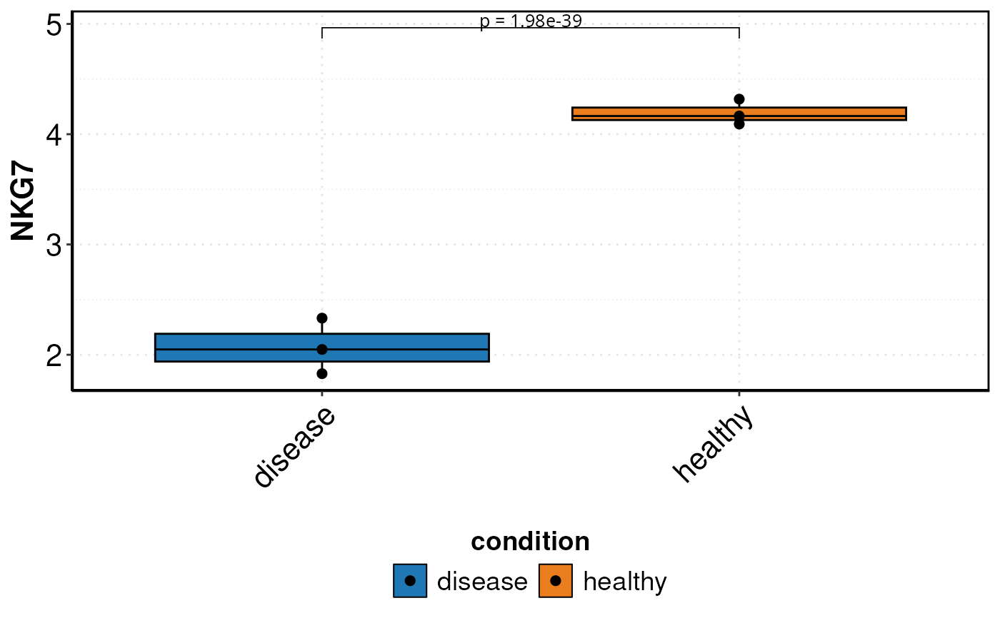

Creates a box plot using a pseudo-bulk approach and performs a Wilcoxon test on single-cell level. Allows customization of outlier removal, statistical labels, and color schemes. Supports comparison of conditions with optional second grouping. Useful for visualizing gene expression and statistical differences.
Usage
DO.BoxPlot(
sce_object,
Feature,
sample.column = "orig.ident",
ListTest = NULL,
group.by = "condition",
group.by.2 = NULL,
ctrl.condition = NULL,
outlier_removal = TRUE,
plot_sample = TRUE,
vector_colors = c("#1f77b4", "#ea7e1eff", "royalblue4", "tomato2", "darkgoldenrod",
"palegreen4", "maroon", "thistle3"),
wilcox_test = TRUE,
stat_pos_mod = 1.15,
step_mod = 0,
hjust.wilcox = 0.5,
vjust.wilcox = 0.25,
size.wilcox = 3.33,
hjust.wilcox.2 = 0.5,
vjust.wilcox.2 = 0,
sign_bar = 0.8,
orderAxis = NULL
)Arguments
- sce_object
The SCE object or Seurat
- Feature
name of the feature/gene
- sample.column
meta data column containing sample IDs
- ListTest
List for which conditions wilcox will be performed, if NULL always CTRL group against everything
- group.by
group name to look for in meta data
- group.by.2
second group name to look for in meta data
- ctrl.condition
select condition to compare to
- outlier_removal
Outlier calculation
- plot_sample
Plot individual sample dot in graph
- vector_colors
get the colours for the plot
- wilcox_test
If you want to have wilcoxon performed, boolean default TRUE
- stat_pos_mod
modificator for where the p-value is plotted increase for higher
- step_mod
value for defining the space between one test and the next one
- hjust.wilcox
value for adjusting height of the text
- vjust.wilcox
value for vertical of text
- size.wilcox
value for size of text of statistical test
- hjust.wilcox.2
value for adjusting height of the text, with group.by.2 specified
- vjust.wilcox.2
value for vertical of text, with group.by.2 specified
- sign_bar
adjusts the sign_bar with group.by.2 specified
- orderAxis
vector for xaxis sorting, alphabetically by default
Examples
sce_data <-
readRDS(system.file("extdata", "sce_data.rds", package = "DOtools"))
set.seed(123)
sce_data$orig.ident <-
sample(rep(c("A", "B", "C"), length.out = ncol(sce_data)))
ListTest <- list()
ListTest[[1]] <- c("healthy", "disease")
DO.BoxPlot(
sce_object = sce_data,
Feature = "NKG7",
sample.column = "orig.ident",
ListTest = ListTest,
group.by = "condition",
ctrl.condition = "healthy",
)
#> Using group, cluster as id variables
#> Scale for fill is already present.
#> Adding another scale for fill, which will replace the existing scale.
